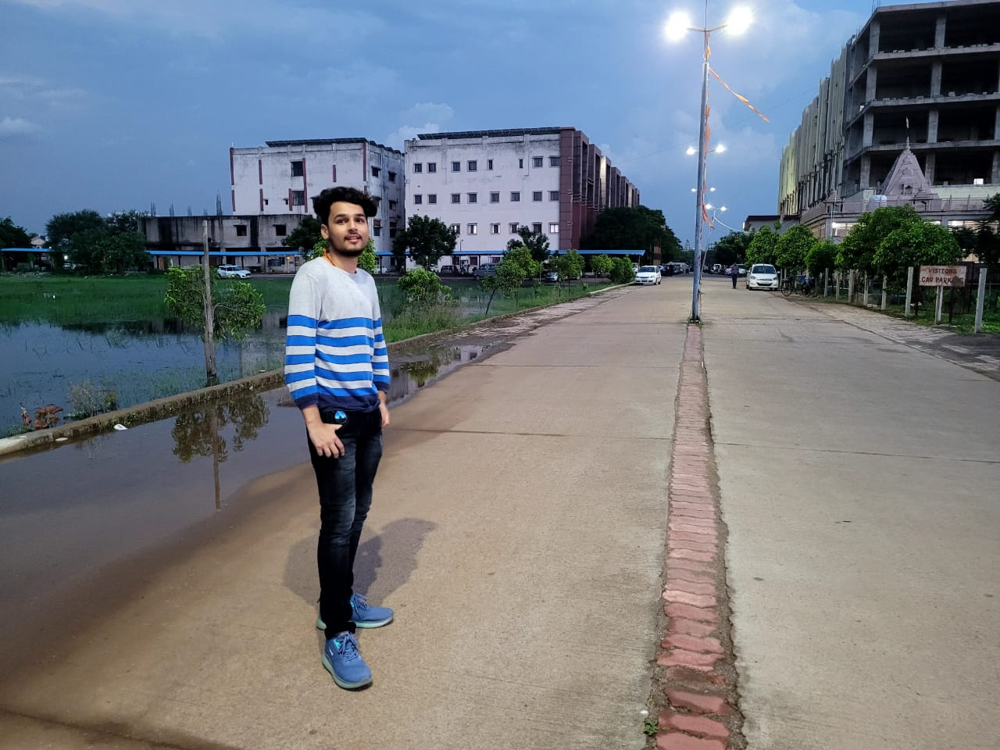

 Hello! My name is Aditya, and I am passionate about learning and exploring new horizons. Currently, I am pursuing a Bachelor of Technology specializing in Blockchain Technology at VIT Vellore, one of the top engineering institutions in India. My academic journey has been marked by consistent performance, earning a merit scholarship with a CGPA of 9.44. I am deeply intrigued by the transformative potential of blockchain technology and how it can revolutionize industries like finance, healthcare, and supply chain.
Beyond academics, I am an avid sports enthusiast. During my school years, I represented my institution in handball at the South Zonal level and played basketball at the state level. These experiences taught me the value of teamwork, perseverance, and discipline. I also hold a blue belt in karate, which has equipped me with self-defense skills and an unyielding spirit to tackle life's challenges. Sports have always been a cornerstone of my holistic development, complementing my academic pursuits.
Professionally, I have had the privilege of interning at BOSCH (RBAI), where I gained hands-on experience in PCB assembly and database management. This exposure allowed me to understand the practical applications of technology in real-world scenarios. It also fueled my interest in innovative problem-solving and developing systems that enhance efficiency and productivity at the same time.
My journey is not confined to academics and sports. I have actively participated in various workshops and seminars to expand my horizons. My involvement in programs like D-Talk enhanced my public speaking skills, allowing me to communicate ideas effectively. I am also a firm believer in community service and have volunteered for initiatives that aim to uplift the underprivileged. These experiences have shaped me into a well-rounded individual ready to take on challenges with confidence.
© 2024 Aditya Kumar (23BKT0091). All rights reserved.